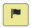

Практики CRR: Макет опитувальника
Пояснення до рисунку:
Приведено найменування одного з 10 доменів CRR оцінювання.
|

Кожне запитання практики містить ідентифікатор, структурований наступним чином: Найменування домену (абревіатура) [DD]: Назва цілі [G#].Номер запитання [Q##] Наприклад: AM:G1.Q1 •найменування домену: АМ - Управління активами •назва цілі: G1 •запитання: Q1
Кожне запитання рівня оцінки кіберзрілості містить ідентифікатор, структурований наступним чином: Найменування домену (абревіатура) [DD]: Ідентифікатор рівня кіберзрілості [MIL#].Номер запитання [Q##] Наприклад: AM:MIL2.Q1 •найменування домену: АМ - Управління активами •іденифікатор рівня оцінки кіберзрілості: MIL2 •запитання: Q1
|
У розділі "2.2.3. Компоненти CRR оцінювання у CSET" наведено детальний опис кожної піктограми CSET, а також інформацію про результат активації дій по кожній з них, які здійснюються користувачем під час проведення оцінювання.
|
•Так – організація повністю виконує вказану в питанні дію. •Нез (не завершено) – організація частково виконує дію. •Ні – організація не виконує дію взагалі. Результат опитування відмічений позначкою "Для перегляду": запитання вимагатиме подальшого перегляду та вивчення.
|
CRR розділяє активи на чотири категорії: Люди, Інформація, Технологія, Об'єкти. |
Індикатор виконання стане синім і замкнеться в коло по мірі того, як користувач відповідатимете на запитання практики для кожної цілі. Після завершення процесу оцінювання на Індикаторі виконання з'явиться прапорець (P).
|

{kind=link}
{kind=link}
підготовлено у редакторі Help & Manual 9.3.0